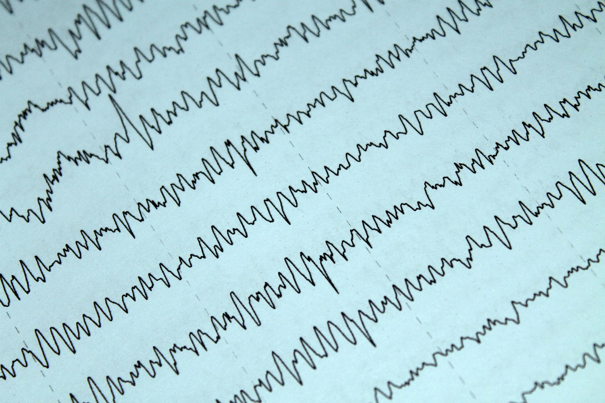
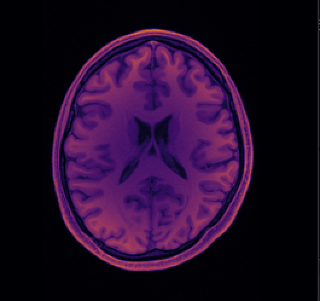
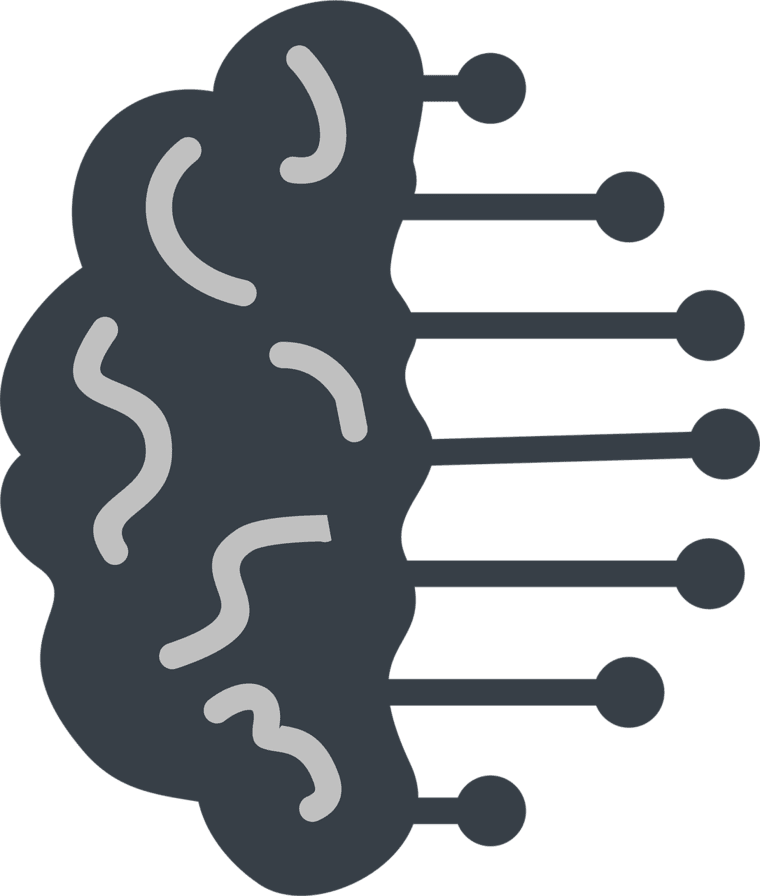

RESEARCH
The PARIETAL LOBE integrates information and supports problem-solving.
Here you’ll find my research experience and academic projects.
RESEARCH EXPERIENCE

Naval Health Research Center (NHRC) — NREIP Intern | Jul. 2025 – Present
Supervisor: Dr. Weimin Zheng
- Adapted existing machine learning models for EEG-to-image reconstruction to NHRC’s computing environment, including GPU adaptation, Python environment configuration, and data preparation.
- Conducted literature review on EEG reconstruction models to guide experiment design and potential collaborations.
- Co-designed a novel experimental paradigm for EEG visual reconstruction, including stimulus creation, display optimization, and pilot testing.
- Presented key research findings and proposed future steps to senior research leadership.
Computational Vision and Learning Lab (Hongjing Lu Lab) — Research Assistant | Apr. 2025 – Present
Supervisor: Dr. Hongjing Lu
- Conducted cognitive psychology experiments on event role recognition, including participant consent, administration, and data collection.
- Prepared and standardized experimental stimuli by editing images and annotating key features, ensuring consistency and reliability across trials.
- Maintained detailed records to support replication and analysis.
- Capstone Research Paper: Wrote a capstone paper on my work in the lab for a quarter, covering role recognition in naturalistic images, detailing the experimental design, data collection, and analysis.
- Link: Capstone Paper

Computational Social Neuroscience Lab (CSNL) — Research Assistant | Sept. 2024 – Present
Supervisor: Dr. Carolyn Parkinson
- Contributed to weekly lab meetings and journal discussions to deepen understanding of social neuroscience methodologies and experiment design.
- Assisted with a project investigating construal level processing in the brain by collecting participant data and providing input on study design.

De Sa Lab, UC San Diego — Summer Research Intern | Jun. 2024 – Sept. 2024
Supervisor: Dr. Virginia De Sa
- Reviewed and annotated research articles on advanced EEG research methodologies, including neural networks, dimensionality reduction techniques, and visual reconstruction methods.
- Gained exposure to computational models (e.g. PCA, autoencoders, diffusion models) and their applications to brain signal decoding by participating in weekly lab meetings.
ACADEMIC PROJECTS

Few-Shot Learning: A Literature Review and Research Proposal | Jun. 2025
Course: Perception, Learning, and Learning Technologies (PSYCH 124J), UCLA, Spring 2025
- Wrote a research paper that synthesizes literature on few-shot learning and proposes a new study to investigate whether inductive biases are learned or innate.
- Link: Final Paper

Penguin Classification Project | Jun. 2024
Course: Python with Applications (PIC 16A), UCLA, Spring 2024
- Collaborated with a partner to program two different classification models to identify penguin species based on given data.
- Link: Penguin Classification Project